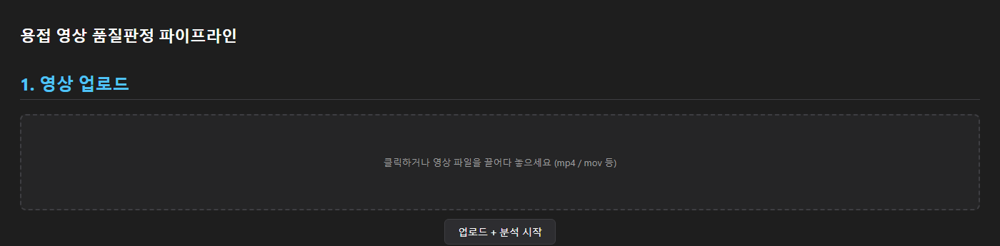
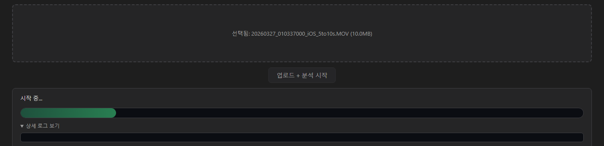
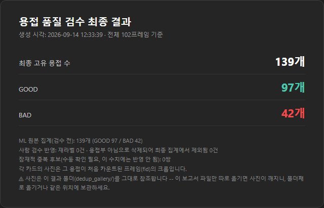

Physical Quality Decision AI - User Guide
How the web app and the command line turn a photo or a video into a per-object GOOD / BAD decision. The first shipped domain is weld.
docs/MODEL_CARD.md for intended use and known limitations.1. What it does
Imagine an experienced inspector playing a video from start to finish and putting a GOOD or BAD sticker on every object of interest. This tool automates that routine, consistently, and counts each physical object exactly once even though the camera sees it in many frames.
| Manual inspection | With this tool |
|---|---|
| Find each object by eye | A detector finds every candidate in every sampled frame |
| Judgement varies between inspectors | The same classifier and thresholds are applied every time |
| The same object seen in many frames is easy to double count or miss | A tracker follows each object across frames and counts it once |
2. The five steps
pqdai video --video / pqdai image --image)Detection
Objects are found as oriented (rotated) boxes, so tilted objects are covered tightly. Large images are scanned in overlapping tiles and merged. A first pass uses a low threshold to catch everything plausible; each candidate is then re-checked on a zoomed crop at the original resolution (--conf and --verify-conf).
Classification and the reference bank
Each crop is classified GOOD / BAD by the classifier, averaged over a few brightness variants. If the prediction is uncertain (entropy above --alpha), the crop's embedding is compared with the reference bank by cosine k-nearest-neighbours and the neighbours vote. See docs/REFERENCE_BANK.md.
Tracking
A Kalman filter predicts where each object should be in the next frame, camera motion is compensated, and overlapping boxes are matched first. When a candidate could equally be a similar-looking neighbour, the match is refused and a new track is started, which avoids swapping identities.
Final decision policy (safety first)
If an object is judged BAD in even one frame, its final decision is BAD. A BAD never flips back to GOOD. The video-level result is BAD if any object is BAD.
3. Using the web app
pip install -e ".[web]" pqdai serve --domain weld # then open http://127.0.0.1:8000
Screen 1 - Upload

Click the dashed box or drop one or more video / image files, then press Upload and analyze. Videos are queued and processed one at a time.
Screen 2 - Progress

The stepper shows Queued, Prepare, Load models, Analyze frames, Build result, Done. While frames are analysed, a live preview shows the raw per-frame verdicts; these are before tracking and aggregation and can differ from the final result.
Screen 3 - Result video
The overlay video draws a green box for GOOD and a red box for BAD. id=N is the track id; it stays the same across frames for the same object.
Screen 4 - Duplicate-count audit
A frame-by-frame viewer for checking that every object was counted exactly once. The left list shows, per frame, how many objects were newly counted and the running total. Use the previous / next object and frame buttons to page through, click a box to see its details, and relabel (GOOD / BAD / UNCERTAIN) or mark a detection as "not an object". These edits are review marks only; they never change the original tally.
Screen 5 - Export the review report

Export report + edits writes a one-page report with the final unique object count, GOOD / BAD counts with your edits applied, how many items were relabeled or excluded, and how many potential duplicate pairs remain. Photos in the report reference the result folder, so keep the report next to dedup_gallery/.
4. Command line
pqdai domains # list installed domains pqdai verify-weights # check sha256 of the released weights pqdai image --image photo.jpg --out result.jpg --json result.json pqdai video --video clip.mp4 --out runs/clip # results.json, report.html, overlay.mp4, dedup_audit.html pqdai bank eval --domain weld # leave-one-out accuracy of the bundled reference bank pqdai bank build --domain weld --crops my_crops/ --out my_bank.npz
| Output | What it is |
|---|---|
results.json | Final per-track decisions and raw data |
report.html | Track table and timeline |
overlay.mp4 | Video with boxes, ids and GOOD / BAD |
dedup_audit.html | Interactive duplicate-count audit and review export |
match_log.json | Why the tracker matched a detection to a track (IoU, embedding similarity, distance) |
5. Summary
The AI makes a first pass over every object; a person then checks only the doubtful ones in the audit view. The model finds and judges candidates quickly and consistently, but responsibility for the final decision stays with the human reviewer.